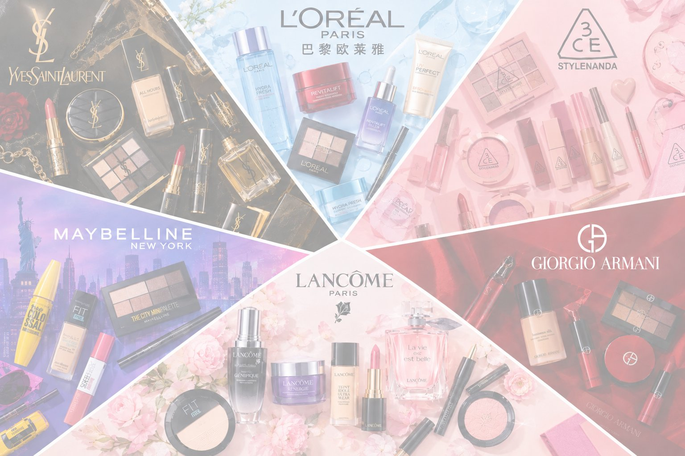

让长期住院的女性和儿童，把本来就必须戴的头巾和口罩，变成自己创作的艺术品。
长期住院的女性与儿童，包括化疗脱发患者、免疫力低下者、长期卧床者，她们面对的是双重剥夺：化疗导致脱发，免疫力要求佩戴口罩，她们照镜子的时候，会有失望的感觉。同时，病房被白墙、病号服和消毒水定义，美与色彩被排除在外。现有公益几乎全部集中在“捐善款”的抽象援助，没有人解决“病房里的日常审美需求”。美不是虚荣，是尊严。作为致力于向人们提供美的一家企业，我们感到有责任行动。
化疗脱发的患者本来就要戴头巾，免疫力低下的患者本来就要戴口罩。我们不讨论“病人能不能化妆”，而是把他们本来就必须佩戴的用品变成画布。
在“戴上春天”平台上，每个人都可以用欧莱雅旗下产品的色号作为“颜料”，自由创作数字油画或书法。AI 会将作品自动转化为可印花的四方连续纹样，实时预览在头巾、口罩上的效果。你可以选择自己购买这件独一无二的定制产品，也可以一键捐赠。您的作品在审核通过后将转化为实物，经医院社工送到病房里的女性与儿童手中。
病床上的创作同样轻量。患者只需随手涂几笔，AI 就会生成专属纹样，定制成头巾或口罩送到医院。创作的疗愈发生在过程中，而戴着自己设计的作品的尊严感，持续每一天。
同时，我们还开发 AI 试妆功能，让在与疾病斗争的过程中略显疲惫的人们可以自由地借我们的产品，重现健康时自信形象，获得审美上的愉悦。健康的人们也可以通过这一项功能，体验我们的最新产品，做出明智的购物决策。
获赠患者（经本人或监护人授权）戴着作品的照片会回传给原作者。你看到自己画的那条头巾，戴在一个真实的、笑着的女孩头上。这让捐赠不再是单向的输出，而是有回音的连接。平台公益页滚动展示这些故事，让每一次创作都被看见。
美不是健康的特权。 技术应该有温度。AI 在这里不做惊世骇俗的事，只是把一抹颜色，送到一张白色的病床上。
我们相信，公益不只是捐钱捐物，更是让被帮助的人重新成为创造者。当一位长期住院的女孩戴上自己设计的头巾，她不再只是“病人”，而是“创作者”。
头巾和口罩是生活必需品的美学升级，不涉及化妆品直接接触治疗期患者。分发全程走医院社工渠道，密封包装，感染科可控。患者照片回传须主动授权，展示时以“创作者”而非“病人”身份呈现。服务对象是共创者，而非素材。

九大色系自然相融 · 悬停或点击色块查看色号 · 悬停色号可见产品卡片
已选色号（点击可移除）：
选择画笔与色号，在画布上自由创作
自由挑选“哑光口红”“水光唇釉”“粉雾腮红”“眼线液笔”“眼线胶笔”五种作画效果
本次使用色号（悬停色块可查看颜色寓意）：
把作品扫描成可印花的四方连续纹样，可直接用于头巾、口罩
自动识别画布上的主体、去掉白色底，得到可重复排列的纹样元件。
请选择作品去向：
所用颜色介绍，戳我了解：
作品提交后进入审核，审核通过将发放优惠券，可在信息栏查看。
选择当前情绪：
用户名：olivia
我被选中了 0 个作品
来自病房的照片与感谢（不展示公益用户信息）